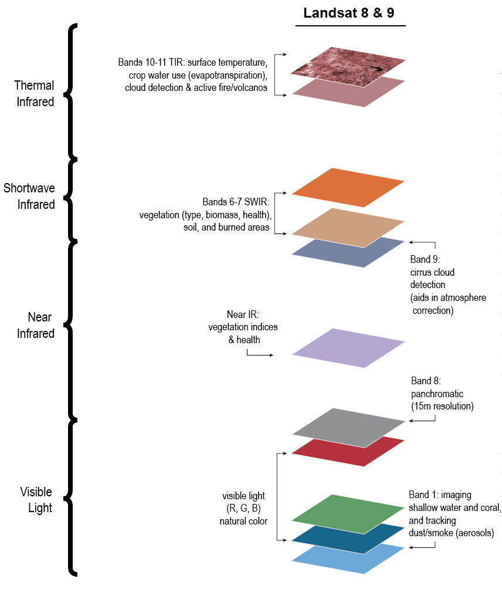

Start Here - Intro to Landsat Data
Overview
In this cookbook, you will access, process, analyze, and visualize satellite data in the context of machine learning workflows. This particular cookbook notebook will provide an introduction to Landsat data to build our intuition as we move toward data ingestion, processing, and analysis.
Time to learn: 5 minutes
Landsat Data
The data in this cookbook originally come from the Landsat program, which is the longest record of moderate resolution multispectral data of the Earth’s surface. This program has launched several different satellites spanning many years which are designated as Landsat 1-9.

When accessing the data, it’s important to keep in mind a couple key points. First, the instruments on different Landsat missions (1-9) varied in certain aspects. Second, Landsat data is available from multiple providers (USGS, NASA, Google, Microsoft, AWS, etc) but may vary in completeness and the level of processing applied. For the dataset that you end up using, it is crucial to review to relevant information from the particular data provider and the specific Landsat mission to understand the details, especially if you are comparing data across providers or missions.
In general, a common aspect of Landsat data is the use of different wavelength-bands to capture multiple images of the same area - together providing much more information about different features on the ground than a single image alone. This provides us with a stack of images for each spatial region that we might be interested.

Additionally, whenever we are looking at changes in satellite images over time, we will have an additional time dimension. For example, we will consider two stacks of images from different years to look at the change in the water level around a lake.
Summary
Before accessing any data, it’s a good idea to start by learning about the context and details of the dataset. This will give you the intuition to make informed decisions as you form a processing and analysis pipeline.
Resources and references
The Landsat timeline image is originally from USGS but discovered through earthsciencedata.org
The Landsat 8 banner image is from NASA
The Landsat spectral bands is from NASA
This page was authored by Demetris Roumis circa Jan, 2023